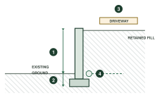

Retaining walls generate more requests for further information than any other Class 10b work, and it is nearly always the same handful of items. Sending these up front will usually see the job straight through.

- 1Retained height, measured from the top of the footing
- 2Footing depth and detail
- 3Surcharge above — driveway, structure or fill
- 4Drainage behind the wall, and where it discharges
What We Need to See
- Structural engineering design for the wall, signed and dated
- Existing and proposed ground levels on both sides
- Retained height measured from the top of the footing
- Surcharge details where a driveway, structure or fill sits above
- Drainage behind the wall, including where it discharges
- Setback from the boundary
- Where the wall sits on or near a boundary, how it is dealt with
Common Reasons We Come Back
- Levels given on one side of the wall only
- Surcharge from a driveway or parking area not accounted for
- No drainage detail behind the wall
- Retained height on the plan not matching the engineering
Height is measured from the top of the footing, not from finished ground.
This is the one that catches people out most often, and it can change which engineering you
need.